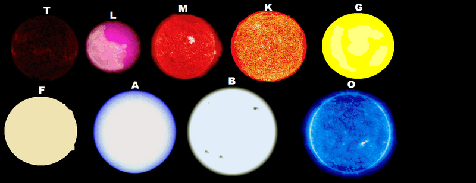

Types of Stars

Stars come in various types and sizes. Here are the main types of
stars:
- Red Dwarfs: Small, cool stars with long lifespans.
- Yellow Dwarfs: Medium-sized stars like our Sun.
- Blue Giants: Large, hot stars that burn brightly.
- Neutron Stars: Dense remnants of supernova explosions.
Star Formation
Star formation begins in vast clouds of gas and dust, often referred
to as nebulae. Over millions of years, gravity causes these clouds
to contract and clump together, gradually increasing in density and
temperature. As the core of the clump becomes hotter, nuclear fusion
ignites, marking the birth of a new star. This process can take
millions of years and results in stars of varying sizes and
characteristics depending on the conditions of the original gas
cloud.
Constellations
Constellations are groupings of stars that form recognizable
patterns in the night sky, often linked to mythology, storytelling,
and practical uses such as navigation. Throughout history, different
cultures have identified constellations and attributed them with
symbolic meanings. Some of the most famous constellations include
Orion, known as the hunter, Ursa Major, which contains the Big
Dipper, and Andromeda, associated with Greek mythology. These star
patterns have guided explorers, served as calendars, and inspired
countless tales across civilizations.